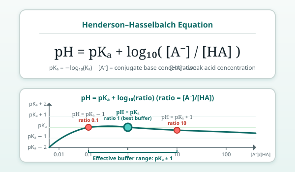

From Lesson 1, a buffer contains a weak acid HA and its conjugate base A⁻. They exist in equilibrium:
The acid-dissociation constant is:
When you add acid (H⁺), A⁻ reacts with it. When you add base (OH⁻), it consumes H⁺, and HA dissociates to replace it. The ratio [A⁻]/[HA] shifts, but [H⁺] — and thus pH — stays nearly constant.
Rearranging the Kₐ expression gives the famous Henderson–Hasselbalch equation:
where pKₐ = −log₁₀(Kₐ). This equation tells you the pH of a buffer from the ratio of conjugate base to weak acid.
Key implications:
[A⁻] = [HA], the log term is zero → pH = pKₐ.[A⁻] > [HA], pH > pKₐ (more basic).[A⁻] < [HA], pH < pKₐ (more acidic).Imagine a buffer with [A⁻]/[HA] = 1 (pH = pKₐ). You add a small amount of strong acid. Some A⁻ converts to HA, so the ratio drops — say to 0.8. The log term becomes log₁₀(0.8) ≈ −0.1. The pH drops by only 0.1 units!
Compare: adding the same acid to unbuffered water would drop the pH by several units. The buffer's two components "absorb" the added H⁺ or OH⁻ by shifting the equilibrium, so the [H⁺] change is tiny.

To buffer effectively near a desired pH, pick a weak acid whose pKₐ is close to that pH. The buffer works best when the pH is within about ±1 unit of the pKₐ (ratio between 0.1 and 10).
| Buffer system | pKₐ | Useful pH range |
|---|---|---|
| CH₃COOH / CH₃COO⁻ | 4.76 | 3.8–5.8 |
| H₂PO₄⁻ / HPO₄²⁻ | 7.21 | 6.2–8.2 |
| H₂CO₃ / HCO₃⁻ | 6.35 | 5.4–7.4 |
| NH₄⁺ / NH₃ | 9.25 | 8.3–10.3 |
| Tris (base) / TrisH⁺ | 8.06 | 7.1–9.1 |
You prepare two acetate buffers, both with total acetate (CH₃COOH + CH₃COO⁻) = 0.1 M. Buffer A has [CH₃COO⁻]/[CH₃COOH] = 1. Buffer B has [CH₃COO⁻]/[CH₃COOH] = 10. You add the same small amount of strong acid to each. Which buffer's pH changes less, and why? (Think about the ratio shift, not the absolute concentrations.)